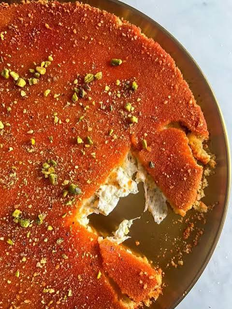
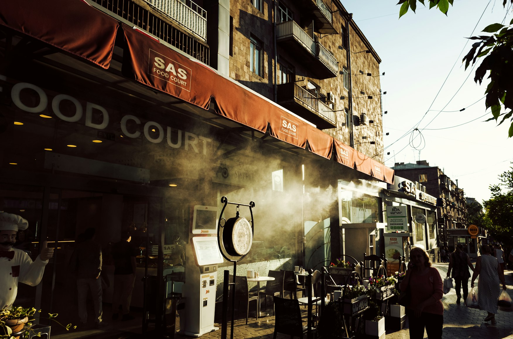
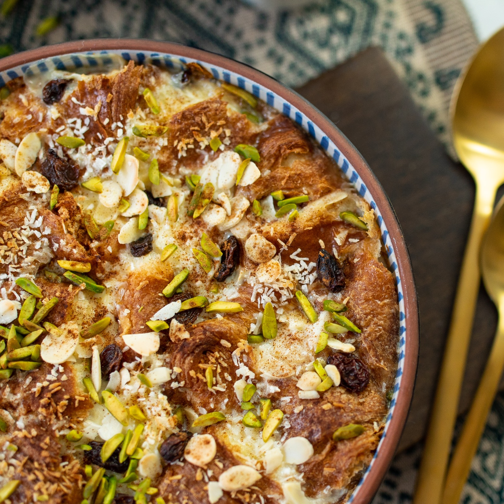
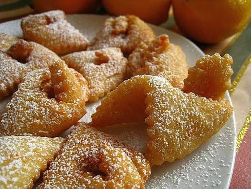

Hot honey and dough emerging from old ovens.
Milk simmered slowly for far too long.
Syrup thickening in the warm air before the dessert even reaches the table.
These are the kinds of things guidebooks rarely mention.
Most travel memories hold onto squares, cathedrals, famous restaurants. But years later, what unexpectedly returns is often something entirely different: the dense evening air of an unfamiliar neighborhood, the sound of dishes behind the thin door of a tiny pastry shop, the taste of a dessert whose name becomes almost impossible to pronounce correctly with time.
Some desserts exist only within their own climate.
They depend on a certain air, a certain humidity, local flour, local butter, the exact fruit season. They do not travel well. They lose something inside airport display cases and attempts to make them “international.”
And perhaps that is exactly why they remain unforgettable.
Knafeh Nabulsi — Nablus, Palestine
In the old city of Nablus, knafeh is prepared almost continuously.
Even late at night, the light inside pastry shops feels too bright for the narrow streets outside. Large metal trays move across hot surfaces, cheese melts slowly beneath delicate strands of kataifi pastry, and syrup is poured in quick motions while the top still holds its fragile crispness.

Everything happens quickly.
Some people carry boxes home. Others eat standing by the counter without even taking off their jackets. Coffee, hot sugar, and the constant noise of the city blend together in the air — a noise that never completely disappears, even after midnight.
The best versions of knafeh rarely look perfect.
The edges may be slightly darker. The syrup may settle unevenly.
But that imperfection is exactly what makes it feel like real food rather than a carefully curated culinary display.
Gata — Armenia
In Armenia, gata hardly requires an introduction.
It is simply always somewhere nearby: on a kitchen table, inside a paper bag on the back seat of a car, in small bakeries near bus stops between mountain roads.

A good gata has a dense, slightly heavy texture. It smells of clarified butter, flour, and the dry cold air that descends from the mountains as winter approaches.
In Yerevan, old bakeries often look almost identical: white lighting, simple displays, warm steam covering the windows. Trays of pastry cool slowly near the entrance while people step inside for only a few minutes — to buy bread, coffee, something sweet for evening tea.
And in moments like these, gata feels especially natural.
Not like a “traditional dessert,” but like part of the city’s ordinary daily life.
Om Ali — Cairo, Egypt
In Cairo, sweetness is rarely delicate.
Om Ali is served hot, heavy with cream, nuts, and softened pastry. The surface darkens quickly beneath the sugar while inside the dessert remains soft and almost overwhelmingly rich for the city’s hot climate.

But during winter evenings, everything begins to feel different.
On rare cool days, Cairo slows down slightly. People stay longer inside cafés. Glass display cases fog up. Waiters move between tables carrying metal trays releasing clouds of sweet milky steam.
Om Ali does not look refined.
A spoon sinks through several layers at once — cream, pastry, raisins, almonds.
And somehow, that lack of perfection is what makes it feel so deeply urban.
Kosh-Tele — Tatarstan and Bashkortostan
Kosh-tele rarely becomes part of gastronomic tourism.
Its name — “bird tongues” — comes from thin strips of dough that twist during frying and become nearly weightless beneath a delicate coating of honey.

Fresh kosh-tele is extremely fragile.
It breaks softly, almost dry and airy, leaving behind a light sweetness and the scent of hot oil that disappears faster than expected.
In winter, desserts like this feel especially fitting.
In the small towns of Tatarstan and Bashkortostan, bakery windows fog up quickly by evening. People brush snow from their sleeves, place strong tea beside them, pause briefly in front of pastry displays before stepping back into the darkness outside.
Kosh-tele is rarely marketed as a regional symbol.
It remains something quieter and more domestic — a dessert that exists inside ordinary life rather than around it.
Ashure — Turkey
Ashure is almost impossible to describe briefly.
It resembles a dessert, a porridge, and something far older than modern urban cuisine all at once. Wheat, beans, chickpeas, dried fruit, nuts, and pomegranate are all added to it. The recipe changes from home to home — sometimes almost from street to street.
Throughout autumn and winter, ashure appears across Istanbul: in small lokantas, bakeries, and family kitchens.
It does not look particularly impressive.
Its uneven surface and thick texture can seem too humble for the polished displays of modern cafés.
But on cool evenings near the Bosphorus, it feels strangely perfect — especially when the sea air grows damp and ferries begin dissolving into the gray light of early sunset.
Why These Desserts Stay in Memory
Many old desserts disappear not because they become less delicious.
But because they are too deeply tied to a place.
To old markets.
To local habits.
To people who cook from memory and rarely write recipes down.
To neighborhoods where rent still allows small bakeries to survive beside chain cafés.
Desserts like these do not easily become global products.
And perhaps that is exactly why they stay in memory for so long — as part of the light, the air, and one particular evening in a city that, eventually, will become something else entirely.